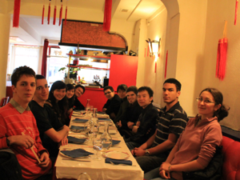

paristechinois
写在Tronc Commun后
写这篇东西，主要是因为又到了一年一度报考EP（Ecole Polytechnique）之时。这个学校如何，如何报考，我已经写过文章。不如在此写写第一年的学习生活，让以后要来的人也有个心理准备。本文中尽量把学校的俚语摆出来，绝非秀法语，只是想省得学弟学妹来到这里发现这么多俚语不认识很心烦。
此时写这个东西真的感慨万千，白驹过隙，一转眼就是一年过去了。在EP，人的时空观会错乱掉，明明几天前发生的事情，人会觉得已经过去好久好久了，有几个礼拜那么久，这是因为每天杂事太多了。
这一年的事情很精彩，真正要下笔的时候，根本不知道从何说起。
首先是学校的同学组成情况吧：每一届500个人，误差不会超过2％。这样一百年才只有50000个啊，但是很明显这个数字偏大了，因为人很难活到100岁。按照校长的讲法，全世界活着的X（EP在法国的昵称）一般是3万人左右。在这500人中，有100人是国际学生，各个国家的都有，但是美国，英国，日本的留学生比较少，几乎没有。400个法国学生是怎么靠进学校的呢，是高考之后参加预科学习两年，然后经过竞争（concour）进来，这个竞争考试我没有参加过，但是今年也见识到了，如果一个人能走到最后被录取，那么他经历的面试持续两个礼拜，每天一场。我想我如果是法国人，很可能进不来了。
下面是这100个外国人，分为EV1和EV2。EV1是外国学生在法国参加预科学习，然后同法国学生一起参加竞争，考入X的人；EV2则是EP每年派人到各个国家各个大学接受申请、组织英语面试笔试挑选得来的。很明显，本人是EV2。还有第三种人，在法国念大学的外国人，也接受和EV2一样的笔试面试（内容一样，但是用法语），最后进入EP，这样的人也属于EV2。这样的EV2不仅在语言上比真正的EV2（录取后方学法语）有优势，并且据说这条通道的竞争性比各国的EP笔试面试要小很多，至少在报考资格上就没有关卡。而在中国，由于几代学长的不懈努力，EP在中国对口的几所高校中，影响力已经形成气候，所以竞争相当激烈，几乎是非年级前几人不能获取考试资格。学生的划分除了国籍，还有年级。在学校每一时刻只有两个年级，按颜色分，一年红，一年黄。如果有很少的几个人（真的很少）要留级，就叫橙色。从上面的描述来看，法国学生和EV1的学生一般比EV2的学生要小两到三岁。
第一个学期开学后，首先是400个法国新生（TOS），EV1和第三种人来学校报到。有意思的是，他们就住在上一届的同性学生的宿舍里面，当然学校每个新生都配有睡袋和折叠床，不用睡地上。在EP向来有老生整新生的传统，比如不准新生进屋，把他们的东西扔出去，偷偷改换自己门牌让他们找不到等等。另外新生的军事训练活动也很多，开学周一周之内，没有几分钟待在寝室里面。我没有整新生的激情，却差点被他无意中整到：我们两个人都有钥匙，有次我回来把钥匙放桌上，然后出去一会，没有带钥匙，一回来，坏了，门已然被锁上。这下我知道是他回来过了，而且很负责地把门锁上了才走。我赶紧跑到楼下，幸亏他们在那边集合等候，还没有走人，要不然我可能要被关在外面大半天了。法国新生在学校待满一周，办完各种手续，包括银行、保险和体育分组，之后就离开，到法国各地参加社会实践，或者说是人文类实习，为期6个月。回来后要写实习报告。
半个月后，EV2们姗姗来迟。来了先两个同性住一间，办两个礼拜的手续，包括保险，和医疗等等。此后就是到几个常规地点学习语言，住在学校安排的住家家里，为期4个月。住家负责周一到周五早饭和晚饭，和周末全天的饭，由学校付钱。周一到周五的午饭，就只能靠自己了，或买速冻食品在学校用微波炉热，或组建小组轮流做饭。分配住家之前，会有问卷调查，请认真填写，千万不要不当一回事。比如是否能忍受素食主义者，如果选是，结果就很可能到素食主义者的家里，天天没肉吃的日子是怎样的，可以想象。此间学校每月发给250欧零花钱，买午饭和零食，还有短途旅游，完全够用。每天学校上5个小时左右的课，作业一般很少，且每户住家家里都有网络，所以闲暇时光很好打发。在这里的法语主要是注重词汇、口语和听力。在这里经常会参与住家家庭聚会，和住家出游，学校也会时常举行课外活动，加上可以在这里过上在法国第一个圣诞节，所以这四个月非常愉快。
四个多月过完，到了第二年一月底，回到巴黎郊区帕莱索。回到这边，开始准备学期（semestre de préparation）。首先还是上法语课，同时还开设应用数学课、数学课和物理课。这三门课算是给EV2开小灶，让我们提前适应法语教学。开课之前有水平测试，不用紧张，只是测试，最好不要超水平发挥，否则会很痛苦。数学主要是拓扑学和线性代数，应用数学则主要是数学分析，物理课就是量子力学的最基础部分。教科方式主要是发资料总结自己回家看，课上就是讲题目而已。中途可能有少量作业，但是学到最后，这三门课最后没有考试。这里的法语教学则是注重文化、语法、写作和应试技巧，期间有几次集体游览巴黎的活动，会有历史教授用很慢的语速做导游。法语课是有一个最后的结业考试，但是没有任何重要性。重要的是，准备学期在四月十五日左右结束，然后有十天的假期，开学之后的两三天之后会有在本校举行的TCF考试，此时要求每项（词汇，听力，阅读）都要有350/699以上才行。如果没有达到，那么本年暑假就要重新回到语言学校学法语。但是我们有一个EV2没有达到这个要求，暑假照样回家，啥事也没有，所以这个规矩似乎没有那么严格。在这两个月的学习中，体育课已然开始，并且分好体育小组。
还有一件事非常重要，那就是学生会KES在准备学期里给每个EV2找一个大parain和小parain（或者是maraine）。翻译成中文就是教父教母的意思，当然不是要我们入教会，法国人真正信教的也不多。这件事的实质就是找两个人罩我们。小parain就是大一级的学长学姐，一般说来他们会经常和我们聊天，介绍学校大小事务，帮我们度过最艰难的过渡时期。大parain就是大很多级，已经毕业工作很多年的学长学姐，在社会上已经有了自己的天地。他们会经常请我们去他们家做客，带我们出去玩。如果自己对这些把握很好，会对自己在法国学习生活发展都大有裨益，更不要说语言关了。
四月底，EV1和法国学生们都回到学校，然后大家按照体育组分宿舍，相同项目的住一块。体育项目分为游泳，羽毛球，网球，篮球，足球，橄榄球，手球，排球，柔道，击剑，攀岩，骑术，划船，铁人三项（划船，自行车，跑步），高尔夫。看起来丰富多彩，但是只能选一样，然后必须贯彻三年，除非你是因为特殊原因，比如说受伤了，才有可能换到柔和的运动中去。当然，其他体育的设施，如场地等，都是可以在没有课的时候免费使用的。此外，学校配有健身房。在每个体育组中，学生由体育老师（chef）管理。除了按体育项目分组，根据学校的军校传统，若干个体育组组成一个连（compagnie），由长官（captain）管理，每周有集合（rassemblement），点名（appel）和宣布事情。在每个人一个宿舍的学校，每周点名查到其实很重要，否则人失踪了都不知道。
正式开学之后，首先是一个礼拜的课程宣传课，然后的周末是全体新生去一个地方狂欢两天（WEI）。回来之后就开始正式上课了。这个学期为期两个月，称为Tronc Commun。tronc 是树干的意思，commun是共同的意思，合起来就是“共同枝干”。相信EP的教学体制是把我们的工程师培养看成种树，先有共同知识，然后根据自己兴趣，发展枝叶。工程师其实牛就牛在这里，通识知识相当广阔，而且有一定深度，什么都能来一两手。
下面介绍Tronc Commun的课程安排。有物理，数学，应用数学，人文社会科学，计算机，经济学导论和体育课（EV2们还有法语课）。这几门的上法是上午上500人大课（amphi），下午分小组上小课（PC），一般为20个人左右一个小组。大课是讲课的内容，小课是习题课。从此时开始到毕业前的每一门课都有免费的辅导课（soutien）。所以每天上一门课左右。现在逐个介绍：
物理课 内容是量子力学，内容不多，上课进度和国内差不多，两个月从最基础讲到基变换而已（微扰论要到后续课程中方有）。考试（contrôle或者pâle）为开卷，但是绝对不容易，对数学要求特别高（微积分和线性代数），很多法国人考完物理后竟然萌生要退学的想法，当然最终考试结果出来，还是比较中规中矩的，估计是相对成绩。老师上课很好，概念解释非常清楚；小课的习题也非常精当，老师有时还会用及其简单的原理介绍科技前沿。
数学课 这个是一门很难的课，对于非法国学生和非数学系出身的EV2来说，法国人重视数学的程度可见一斑。内容是实分析和复分析，其中有大量拓扑学的知识，然后是测度，黎曼积分到勒贝克积分的过渡，希尔伯特空间，索不列夫空间等等。山一般的概念和打仗般的赶进度，几乎让人崩溃。据说实分析是国内数学系要花一年的时间好好学习的课程，而我们只有两个月的时间，其中还要学复分析。复分析工科理科出身的人以为会很容易，那就错了。因为老师会用一节课讲完我们在国内用半个学期学完的内容，其中还会有大量我们还没有掌握清楚的实分析的知识。考试为开卷，难度尚可，这是因为我们一直对这门课持敬畏态度的结果，没有人敢像轻视量子力学那样看数学。
应用数学 难度尚可，内容是概率论和统计。这门课很实用，老师常结合实例来讲解。小课比较难，很少算一个袋子里摸黑球红球的概率，几乎都是比较完备的古典模型。到上课中后期，要做一个小课题（projet），是用scilab这个软件，以蒙特卡洛方法解决一个数学问题。需要组队，两人一组，国籍不限。每十个队一个指导老师，另外还有辅导课。在此课题中，学到的最精华的东西就是用矩阵代替循环的算法，这个时候会发现效率的提高让人咋舌。最后考试为开卷，难度尚可。
人文社会科学 本课的题目叫思考企业。上课的内容是介绍企业运作的基本概念。每堂课是主讲人讲半个小时概念，然后是从企业和政府拉一个领导过来言传身教，有swatch的，easyjet的等等。只可惜本人听力不行，基本只能靠看材料了解大概。本来EV2不参加看考试，结果我们这一届成为了小白鼠，不知试验结果如何。考试是闭卷，主要考基本概念。
计算机 主要内容是学Java。分为两种难度，难和易。简单说来，难的课很难，考试较容易，易的课容易，考试较难。所以对没学过Java的人推荐“易”。在难的课里，老师不仅仅讲Java，连带C和Caml一起讲（法国人都会Caml），加上本人听力有限，对于大课，基本就是不知所云。小课是在机房进行，还比较好，有很多经典的模型，甚至我们会涉及一点点碰撞判定等3D建模中用到的东西，老师讲解清楚，另外还配有辅导老师。考试分为机试和笔试，机试为开卷（不能上网），考得就是速度；笔试开卷，难度尚可。
经济学导论 内容博大精深，既讲宏观也讲微观。老师讲课讲得很好，课件也做得很好，数据都很新，2010年的数据都有。小课也很不错，有讨论，有习题讲解。习题基本就是上午大课的模型深入和推导。考试不难，闭卷。
法语课 算是小课，每周两个小时，EV2的同学才上。主要内容就是简历（CV）和求职信（la lettre de motivation）的写作和面试（entretien）。考试不难，但会考求职信结尾部分的套语，要背一下，但是平常写作还是复制粘贴。法语学到此时，算是学了一年多的法语了，可是听课勉勉强强，和法国学生交谈就比较吃力了。如果他和你说话还好，如果是他们相互之间说，就有可能很难听懂，很难插上话因为他们和中国青少年一样，喜欢用俚语和网络词汇。当然除了语言问题，文化障碍也是不小的问题，试想，我们看不同的书，听不同的音乐，玩不一样的游戏，追不同的明星，哪会有什么共同语言。这个问题需要时间来克服。当然，学校在课余，有很多活动和聚会、野餐以及年级旅游，课程项目，都是融入法国学生圈子的机会。
体育课 各上各的，每周两次或者三次，因组而异。到了期末，每个组都要进行游泳和跑步测试。在身体素质方面，这里的中国学生远远不如法国学生。关于受伤不用害怕，有运动保险，受伤了一分钱都不用出。
总的来说，这样的安排是很合理的，每天基本都是大课听得云里雾里，然后在小课里弄得七七八八，然后课后自己看看书（poly）或者课件（transparent）就全懂了。每天的课大概是5到7个小时，很充实，很累，也很精彩。学校的教材全部免费，部分课上课之前，教育部（scolarité）还会把课件打印好在上课前几分钟就发给学生，很贴心。所有的大课都不点名，所有的小课都要签名或点名。在考试中EV2往往可以多考半个小时，无论开卷闭卷，都可以带字典（包括电子词典）。成绩要求每年都不一样，在Tronc Commun中，考试结果的要求是平均分要有C即可，具体规则是A和E抵消，B和D抵消，F就要补考了。所有Tronc Commun的成绩不参与之后的排名（就算以后排名，也只有法国人，排名对中国人几乎没有用）。虽然只有两个月，但是这两个月学到的东西，相当于国内半年甚至一年的学习成果。
最后一门考完是7月13日，第二天就是法国国庆日，一定要去香榭丽舍大街看看阅兵式，除了可以看到法国总统，还可以看到EP的阵列（défilet）。新生第一年不能参加，第二年可以，参加录取率很高，7月1日考试结束后开始训练，每日两个小时左右。随后就是暑假（grandes vacances），这是人生中可能最后一个暑假，在EP的学习中以后就没有暑假了，换句话说，以后的暑假要实习。
在临近期末的时候，有一个仪式特别重要，那就是授帽仪式，其时所有EP在读学生（两个年级）的学生齐聚巴黎EP老校址，先是老生请新生大吃一顿，然后在神秘诡异的气氛中，老生给新生授帽，此之后，新生方算是真正的Polytechnicien。授帽之后，大家以冠为爵，畅饮香槟，快意人生。
以上就是来到EP第一年的生活，紧张而精彩。从教学和生活安排上看，真的很周到。尤其是对EV2，从到巴黎下飞机就专车来接，到把我们集中办各种手续，长期居留证（le titre de séjour），银行账户，健康保险，申请住房补贴（这一点也可以看成缺点，由此相比其他留学生，我们在手续办理方面的能力要发展得迟一些，但是不妨），到找住家，到找大小parain，到免费的心理咨询，到发放够用的奖学金，可以说一切的一切都是关怀备至。引用我们EP教育主任的话就是“Tout est pour vous（一切为了你们）”。
可以告诉大家，第二年的生活会更加紧张而精彩：关注于专业培养的同学会在这一年开始找到自己的答案。
正直教师佳节，本人在此向所有老师致敬，祝吾师身体健康，工作顺利，家庭和和美美。
2011的学弟学妹们马上也要到了，祝你们旅途平安愉快！
思绪如潮涌，如梦似幻，一曲《水光に映る従夢（梦中映照的水光）》（《战国basara》）送给大家！
附一位上海交大学长对EP的评价（摘自饮水思源论坛）：
下面介绍一下生活就业情况：1，没听说没有找到工作的2，找到的工作都很不错。个人认为平均起来比去美国读phd（30名之前的大学）找到的工作质量要高。另外一点可以任意选专业。3，X的名声在伦敦的金融界太响了。4，体育场所丰富，生活又幽静又快活。5，不一定要X。mine，pont,ensta，telecom也都非常好。6，不建议一心只有学业和科研的人过来，除了读纯数的。想跨专业读博士的人这里是非常好的平台。7，如果对法国不是很满意，找工作可以找美国，伦敦或是香港。如果对法国相当不满意，第四年可以去其他国家读。8，总结一点，欢迎大家报考X！
不应鼓动大家报考，而是尽量要把信息完整的提供给大家，无论正面还是反面，然后大家根据自身情况来决定。学校名声大好不好，和适合自己没有必然联系，比如说数理金融也不是想做就做的，有可能自身能力达不到，做的比较痛苦。我们这一届有个印度过来的小姑娘就是前一两个月扛不住直接买机票回家了。希望大家多找学长学姐全面了解信息，看看适不适合自己。
作者简介：舒川
2006-2010：南京大学物理学院
2010：Ecole Polytechnique
写在Tronc Commun之后

2012年1月28日星期六